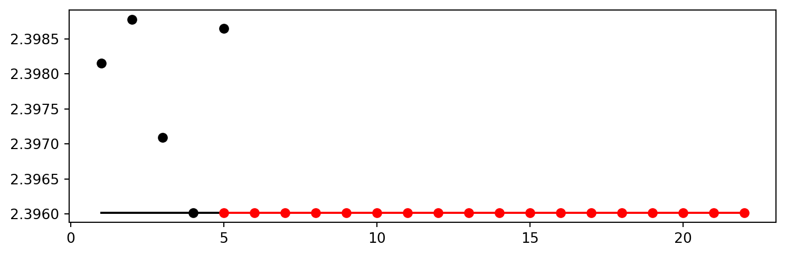
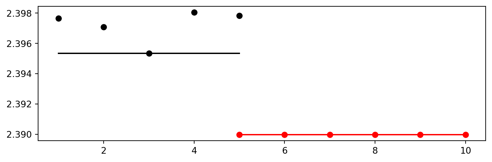
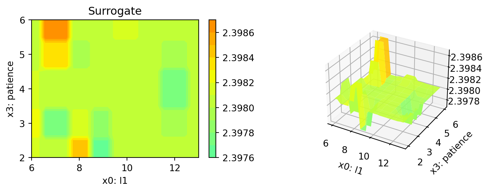

# import sys
# !{sys.executable} -m pip install --upgrade build
# !{sys.executable} -m pip install --upgrade --force-reinstall spotPython15 Hyperparameter Tuning: VBDP
In this tutorial, we will show how spotPython can be integrated into the PyTorch training workflow.
This document refers to the following software versions:
python: 3.10.10torch: 2.0.1torchvision: 0.15.0spotPython: 0.2.29
spotPython can be installed via pip. Alternatively, the source code can be downloaded from gitHub: https://github.com/sequential-parameter-optimization/spotPython.
!pip install spotPython- Uncomment the following lines if you want to for (re-)installation the latest version of
spotPythonfrom gitHub.
15.1 Setup
Before we consider the detailed experimental setup, we select the parameters that affect run time, initial design size and the device that is used.
MAX_TIME = 1
INIT_SIZE = 5
DEVICE = None # "cpu" # "cuda:0"from spotPython.utils.device import getDevice
DEVICE = getDevice(DEVICE)
print(DEVICE)mpsimport os
import copy
import socket
from datetime import datetime
from dateutil.tz import tzlocal
start_time = datetime.now(tzlocal())
HOSTNAME = socket.gethostname().split(".")[0]
experiment_name = '25-torch' + "_" + HOSTNAME + "_" + str(MAX_TIME) + "min_" + str(INIT_SIZE) + "init_" + str(start_time).split(".", 1)[0].replace(' ', '_')
experiment_name = experiment_name.replace(':', '-')
print(experiment_name)
if not os.path.exists('./figures'):
os.makedirs('./figures')25-torch_bartz09_1min_5init_2023-06-15_06-03-0815.2 Initialization of the fun_control Dictionary
spotPython uses a Python dictionary for storing the information required for the hyperparameter tuning process. This dictionary is called fun_control and is initialized with the function fun_control_init. The function fun_control_init returns a skeleton dictionary. The dictionary is filled with the required information for the hyperparameter tuning process. It stores the hyperparameter tuning settings, e.g., the deep learning network architecture that should be tuned, the classification (or regression) problem, and the data that is used for the tuning. The dictionary is used as an input for the SPOT function.
from spotPython.utils.init import fun_control_init
fun_control = fun_control_init(task="classification",
tensorboard_path="runs/25_spot_torch_vbdp",
device=DEVICE)import torch
print(torch.__version__)
# Check that MPS is available
if not torch.backends.mps.is_available():
if not torch.backends.mps.is_built():
print("MPS not available because the current PyTorch install was not "
"built with MPS enabled.")
else:
print("MPS not available because the current MacOS version is not 12.3+ "
"and/or you do not have an MPS-enabled device on this machine.")
else:
mps_device = torch.device("mps")
print("MPS device: ", mps_device)2.0.1
MPS device: mps16 PyTorch Data Loading
16.1 1. Load VBDP Data
import pandas as pd
from sklearn.preprocessing import OrdinalEncoder
train_df = pd.read_csv('./data/VBDP/train.csv')
# remove the id column
train_df = train_df.drop(columns=['id'])
n_samples = train_df.shape[0]
n_features = train_df.shape[1] - 1
target_column = "prognosis"
# # Encoder our prognosis labels as integers for easier decoding later
enc = OrdinalEncoder()
train_df[target_column] = enc.fit_transform(train_df[[target_column]])
train_df.head()
# convert all entries to int for faster processing
train_df = train_df.astype(int)from spotPython.data.vbdp import combine_features
df_new = train_df.copy()
# save the target column using "target_column" as the column name
target = train_df[target_column]
# remove the target column
df_new = df_new.drop(columns=[target_column])
train_df = combine_features(df_new)
# add the target column back
train_df[target_column] = target
train_df.head()| sudden_fever | headache | mouth_bleed | nose_bleed | muscle_pain | joint_pain | vomiting | rash | diarrhea | hypotension | ... | 6039 | 6040 | 6041 | 6042 | 6043 | 6044 | 6045 | 6046 | 6047 | prognosis | |
|---|---|---|---|---|---|---|---|---|---|---|---|---|---|---|---|---|---|---|---|---|---|
| 0 | 1 | 1 | 0 | 1 | 1 | 1 | 1 | 0 | 1 | 1 | ... | 0 | 0 | 0 | 0 | 0 | 0 | 0 | 0 | 0 | 3 |
| 1 | 0 | 0 | 0 | 0 | 0 | 0 | 1 | 0 | 1 | 0 | ... | 0 | 0 | 0 | 0 | 0 | 0 | 0 | 0 | 0 | 7 |
| 2 | 0 | 1 | 1 | 1 | 0 | 1 | 1 | 1 | 1 | 1 | ... | 1 | 1 | 0 | 1 | 1 | 0 | 1 | 1 | 0 | 3 |
| 3 | 0 | 0 | 1 | 1 | 1 | 1 | 0 | 1 | 0 | 1 | ... | 0 | 0 | 0 | 0 | 0 | 0 | 0 | 0 | 0 | 10 |
| 4 | 0 | 0 | 0 | 0 | 0 | 0 | 0 | 0 | 1 | 0 | ... | 0 | 1 | 1 | 0 | 1 | 1 | 0 | 0 | 0 | 6 |
5 rows × 6113 columns
- feature engineering: 6112 features
from sklearn.model_selection import train_test_split
import numpy as np
n_samples = train_df.shape[0]
n_features = train_df.shape[1] - 1
train_df.columns = [f"x{i}" for i in range(1, n_features+1)] + [target_column]
X_train, X_test, y_train, y_test = train_test_split(train_df.drop(target_column, axis=1), train_df[target_column],
random_state=42,
test_size=0.25,
stratify=train_df[target_column])
trainset = pd.DataFrame(np.hstack((X_train, np.array(y_train).reshape(-1, 1))))
testset = pd.DataFrame(np.hstack((X_test, np.array(y_test).reshape(-1, 1))))
trainset.columns = [f"x{i}" for i in range(1, n_features+1)] + [target_column]
testset.columns = [f"x{i}" for i in range(1, n_features+1)] + [target_column]
print(train_df.shape)
print(trainset.shape)
print(testset.shape)(707, 6113)
(530, 6113)
(177, 6113)from sklearn.model_selection import train_test_split
from spotPython.torch.dataframedataset import DataFrameDataset
dtype_x = torch.float32
dtype_y = torch.long
train_df = DataFrameDataset(train_df, target_column=target_column, dtype_x=dtype_x, dtype_y=dtype_y)
train = DataFrameDataset(trainset, target_column=target_column, dtype_x=dtype_x, dtype_y=dtype_y)
test = DataFrameDataset(testset, target_column=target_column, dtype_x=dtype_x, dtype_y=dtype_y)
n_samples = len(train)# add the dataset to the fun_control
fun_control.update({"data": train_df, # full dataset,
"train": train,
"test": test,
"n_samples": n_samples,
"target_column": target_column})16.2 Specification of the Preprocessing Model
After the training and test data are specified and added to the fun_control dictionary, spotPython allows the specification of a data preprocessing pipeline, e.g., for the scaling of the data or for the one-hot encoding of categorical variables. The preprocessing model is called prep_model (“preparation” or pre-processing) and includes steps that are not subject to the hyperparameter tuning process. The preprocessing model is specified in the fun_control dictionary. The preprocessing model can be implemented as a sklearn pipeline. The following code shows a typical preprocessing pipeline:
# categorical_columns = []
# one_hot_encoder = OneHotEncoder(handle_unknown="ignore", sparse_output=False)
# prep_model = ColumnTransformer(
# transformers=[
# ("categorical", one_hot_encoder, categorical_columns),
# ],
# remainder=StandardScaler(),
# )
prep_model = None
fun_control.update({"prep_model": prep_model})16.3 Select algorithm and core_model_hyper_dict
16.3.1 Implementing a Configurable Neural Network With spotPython
spotPython includes the Net_vbdp class which is implemented in the file netvbdp.py. The class is imported here. Net_vbdp inherits from the class Net_Core which is implemented in the file netcore.py, see ?sec-the-net-core-class-24.
17 add the nn model to the fun_control dictionary
from spotPython.data.torch_hyper_dict import TorchHyperDict
from spotPython.hyperparameters.values import add_core_model_to_fun_control
from spotPython.torch.netvbdp import Net_vbdp
fun_control = add_core_model_to_fun_control(core_model=Net_vbdp,
fun_control=fun_control,
hyper_dict=TorchHyperDict)17.1 Modifying the Hyperparameters
Small number of epochs for demonstration purposes
epochsis set to 2 and 3 for demonstration purposes. These values are too small for a real application.
from spotPython.hyperparameters.values import modify_hyper_parameter_bounds
fun_control = modify_hyper_parameter_bounds(fun_control, "_L0", bounds=[n_features, n_features])
fun_control = modify_hyper_parameter_bounds(fun_control, "l1", bounds=[6, 13])
fun_control = modify_hyper_parameter_bounds(fun_control, "epochs", bounds=[2, 2])
fun_control = modify_hyper_parameter_bounds(fun_control, "patience", bounds=[2, 6])
fun_control = modify_hyper_parameter_bounds(fun_control, "lr_mult", bounds=[1e-3, 1e-3])
fun_control = modify_hyper_parameter_bounds(fun_control, "sgd_momentum", bounds=[0.9, 0.9])from spotPython.hyperparameters.values import modify_hyper_parameter_levels
fun_control = modify_hyper_parameter_levels(fun_control, "optimizer",["Adam", "AdamW", "Adamax", "NAdam"])
# fun_control = modify_hyper_parameter_levels(fun_control, "optimizer", ["Adam"])
# fun_control = modify_hyper_parameter_levels(fun_control, "leaf_model", ["LinearRegression"])
# fun_control["core_model_hyper_dict"]fun_control = modify_hyper_parameter_bounds(fun_control,
"lr_mult", bounds=[1e-3, 1e-3])
fun_control = modify_hyper_parameter_bounds(fun_control,
"sgd_momentum", bounds=[0.9, 0.9])17.2 Evaluation
The evaluation procedure requires the specification of two elements:
- the way how the data is split into a train and a test set and
- the loss function (and a metric).
These are described in Section 14.8.
The loss function is specified by the key "loss_function". We will use CrossEntropy loss for the multiclass-classification task.
from torch.nn import CrossEntropyLoss
loss_function = CrossEntropyLoss()
fun_control.update({"loss_function": loss_function})17.2.1 Metric
from spotPython.torch.mapk import MAPK
import torch
mapk = MAPK(k=2)
target = torch.tensor([0, 1, 2, 2])
preds = torch.tensor(
[
[0.5, 0.2, 0.2], # 0 is in top 2
[0.3, 0.4, 0.2], # 1 is in top 2
[0.2, 0.4, 0.3], # 2 is in top 2
[0.7, 0.2, 0.1], # 2 isn't in top 2
]
)
mapk.update(preds, target)
print(mapk.compute()) # tensor(0.6250)tensor(0.6250)from spotPython.torch.mapk import MAPK
import torchmetrics
metric_torch = MAPK(k=3)
fun_control.update({"metric_torch": metric_torch})17.3 Calling the SPOT Function
# extract the variable types, names, and bounds
from spotPython.hyperparameters.values import (get_bound_values,
get_var_name,
get_var_type,)
var_type = get_var_type(fun_control)
var_name = get_var_name(fun_control)
fun_control.update({"var_type": var_type,
"var_name": var_name})
lower = get_bound_values(fun_control, "lower")
upper = get_bound_values(fun_control, "upper")Now, the dictionary fun_control contains all information needed for the hyperparameter tuning. Before the hyperparameter tuning is started, it is recommended to take a look at the experimental design. The method gen_design_table generates a design table as follows:
from spotPython.utils.eda import gen_design_table
print(gen_design_table(fun_control))| name | type | default | lower | upper | transform |
|--------------|--------|-----------|----------|----------|-----------------------|
| _L0 | int | 64 | 6112 | 6112 | None |
| l1 | int | 8 | 6 | 13 | transform_power_2_int |
| dropout_prob | float | 0.01 | 0 | 0.9 | None |
| lr_mult | float | 1.0 | 0.001 | 0.001 | None |
| batch_size | int | 4 | 1 | 4 | transform_power_2_int |
| epochs | int | 4 | 2 | 2 | transform_power_2_int |
| k_folds | int | 1 | 1 | 1 | None |
| patience | int | 2 | 2 | 6 | transform_power_2_int |
| optimizer | factor | SGD | 0 | 3 | None |
| sgd_momentum | float | 0.0 | 0.9 | 0.9 | None |This allows to check if all information is available and if the information is correct.
The objective function fun_torch is selected next. It implements an interface from PyTorch’s training, validation, and testing methods to spotPython.
from spotPython.fun.hypertorch import HyperTorch
fun = HyperTorch().fun_torchfrom spotPython.hyperparameters.values import get_default_hyperparameters_as_array
hyper_dict=TorchHyperDict().load()
X_start = get_default_hyperparameters_as_array(fun_control, hyper_dict)import numpy as np
from spotPython.spot import spot
from math import inf
spot_tuner = spot.Spot(fun=fun,
lower = lower,
upper = upper,
fun_evals = inf,
fun_repeats = 1,
max_time = MAX_TIME,
noise = False,
tolerance_x = np.sqrt(np.spacing(1)),
var_type = var_type,
var_name = var_name,
infill_criterion = "y",
n_points = 1,
seed=123,
log_level = 50,
show_models= False,
show_progress= True,
fun_control = fun_control,
design_control={"init_size": INIT_SIZE,
"repeats": 1},
surrogate_control={"noise": True,
"cod_type": "norm",
"min_theta": -4,
"max_theta": 3,
"n_theta": len(var_name),
"model_fun_evals": 10_000,
"log_level": 50
})
spot_tuner.run(X_start=X_start)
config: {'_L0': 6112, 'l1': 2048, 'dropout_prob': 0.17031221661559992, 'lr_mult': 0.001, 'batch_size': 16, 'epochs': 4, 'k_folds': 1, 'patience': 32, 'optimizer': 'AdamW', 'sgd_momentum': 0.9}
Epoch: 1Loss on hold-out set: 2.3982605252947127
Accuracy on hold-out set: 0.07547169811320754
MAPK value on hold-out data: 0.1510416716337204
Epoch: 2Loss on hold-out set: 2.3982023852212087
Accuracy on hold-out set: 0.07547169811320754
MAPK value on hold-out data: 0.1532738208770752
Epoch: 3Loss on hold-out set: 2.398196714265006
Accuracy on hold-out set: 0.08490566037735849
MAPK value on hold-out data: 0.15625
Epoch: 4Loss on hold-out set: 2.3981498309544156
Accuracy on hold-out set: 0.09433962264150944
MAPK value on hold-out data: 0.1584821492433548
Returned to Spot: Validation loss: 2.3981498309544156
----------------------------------------------
config: {'_L0': 6112, 'l1': 256, 'dropout_prob': 0.19379790035512987, 'lr_mult': 0.001, 'batch_size': 8, 'epochs': 4, 'k_folds': 1, 'patience': 4, 'optimizer': 'Adamax', 'sgd_momentum': 0.9}
Epoch: 1Loss on hold-out set: 2.3988305727640786
Accuracy on hold-out set: 0.05188679245283019
MAPK value on hold-out data: 0.1288580298423767
Epoch: 2Loss on hold-out set: 2.3988938949726246
Accuracy on hold-out set: 0.05188679245283019
MAPK value on hold-out data: 0.1180555522441864
Epoch: 3Loss on hold-out set: 2.398850114257247
Accuracy on hold-out set: 0.05188679245283019
MAPK value on hold-out data: 0.1180555447936058
Epoch: 4Loss on hold-out set: 2.398773264001917
Accuracy on hold-out set: 0.05188679245283019
MAPK value on hold-out data: 0.12268520146608353
Returned to Spot: Validation loss: 2.398773264001917
----------------------------------------------
config: {'_L0': 6112, 'l1': 4096, 'dropout_prob': 0.6759063718076167, 'lr_mult': 0.001, 'batch_size': 2, 'epochs': 4, 'k_folds': 1, 'patience': 16, 'optimizer': 'NAdam', 'sgd_momentum': 0.9}
Epoch: 1Loss on hold-out set: 2.3978672904788323
Accuracy on hold-out set: 0.09905660377358491
MAPK value on hold-out data: 0.16823899745941162
Epoch: 2Loss on hold-out set: 2.3976037727212005
Accuracy on hold-out set: 0.11320754716981132
MAPK value on hold-out data: 0.20911946892738342
Epoch: 3Loss on hold-out set: 2.3974687625777045
Accuracy on hold-out set: 0.13679245283018868
MAPK value on hold-out data: 0.22012579441070557
Epoch: 4Loss on hold-out set: 2.397091991496536
Accuracy on hold-out set: 0.1320754716981132
MAPK value on hold-out data: 0.25864776968955994
Returned to Spot: Validation loss: 2.397091991496536
----------------------------------------------
config: {'_L0': 6112, 'l1': 128, 'dropout_prob': 0.37306669346546995, 'lr_mult': 0.001, 'batch_size': 4, 'epochs': 4, 'k_folds': 1, 'patience': 8, 'optimizer': 'AdamW', 'sgd_momentum': 0.9}
Epoch: 1Loss on hold-out set: 2.3959821485123545
Accuracy on hold-out set: 0.08962264150943396
MAPK value on hold-out data: 0.18238994479179382
Epoch: 2Loss on hold-out set: 2.3959691344567067
Accuracy on hold-out set: 0.08962264150943396
MAPK value on hold-out data: 0.18396227061748505
Epoch: 3Loss on hold-out set: 2.396030417028463
Accuracy on hold-out set: 0.08962264150943396
MAPK value on hold-out data: 0.18553456664085388
Epoch: 4Loss on hold-out set: 2.396017794339162
Accuracy on hold-out set: 0.08962264150943396
MAPK value on hold-out data: 0.18553456664085388
Returned to Spot: Validation loss: 2.396017794339162
----------------------------------------------
config: {'_L0': 6112, 'l1': 1024, 'dropout_prob': 0.870137281216666, 'lr_mult': 0.001, 'batch_size': 8, 'epochs': 4, 'k_folds': 1, 'patience': 64, 'optimizer': 'Adam', 'sgd_momentum': 0.9}
Epoch: 1Loss on hold-out set: 2.398486923288416
Accuracy on hold-out set: 0.05188679245283019
MAPK value on hold-out data: 0.10185185819864273
Epoch: 2Loss on hold-out set: 2.3985289997524686
Accuracy on hold-out set: 0.05660377358490566
MAPK value on hold-out data: 0.11188272386789322
Epoch: 3Loss on hold-out set: 2.398688069096318
Accuracy on hold-out set: 0.06132075471698113
MAPK value on hold-out data: 0.1041666641831398
Epoch: 4Loss on hold-out set: 2.398649542419999
Accuracy on hold-out set: 0.05660377358490566
MAPK value on hold-out data: 0.11265431344509125
Returned to Spot: Validation loss: 2.398649542419999
----------------------------------------------
config: {'_L0': 6112, 'l1': 128, 'dropout_prob': 0.42768202697793684, 'lr_mult': 0.001, 'batch_size': 4, 'epochs': 4, 'k_folds': 1, 'patience': 8, 'optimizer': 'AdamW', 'sgd_momentum': 0.9}
Epoch: 1Loss on hold-out set: 2.3969987698321074
Accuracy on hold-out set: 0.08962264150943396
MAPK value on hold-out data: 0.17610064148902893
Epoch: 2Loss on hold-out set: 2.3969291336131544
Accuracy on hold-out set: 0.08018867924528301
MAPK value on hold-out data: 0.16981132328510284
Epoch: 3Loss on hold-out set: 2.3968813509311317
Accuracy on hold-out set: 0.08962264150943396
MAPK value on hold-out data: 0.17924527823925018
Epoch: 4Loss on hold-out set: 2.396941063539037
Accuracy on hold-out set: 0.09433962264150944
MAPK value on hold-out data: 0.1863207370042801
Returned to Spot: Validation loss: 2.396941063539037
----------------------------------------------
spotPython tuning: 2.396017794339162 [#---------] 5.30%
config: {'_L0': 6112, 'l1': 128, 'dropout_prob': 0.411254914229393, 'lr_mult': 0.001, 'batch_size': 4, 'epochs': 4, 'k_folds': 1, 'patience': 8, 'optimizer': 'AdamW', 'sgd_momentum': 0.9}
Epoch: 1Loss on hold-out set: 2.3979726107615345
Accuracy on hold-out set: 0.09433962264150944
MAPK value on hold-out data: 0.16194969415664673
Epoch: 2Loss on hold-out set: 2.397952282203818
Accuracy on hold-out set: 0.08490566037735849
MAPK value on hold-out data: 0.15801888704299927
Epoch: 3Loss on hold-out set: 2.3979016834834836
Accuracy on hold-out set: 0.09433962264150944
MAPK value on hold-out data: 0.16116352379322052
Epoch: 4Loss on hold-out set: 2.398064433403735
Accuracy on hold-out set: 0.08962264150943396
MAPK value on hold-out data: 0.15487420558929443
Returned to Spot: Validation loss: 2.398064433403735
----------------------------------------------
spotPython tuning: 2.396017794339162 [#---------] 10.67%
config: {'_L0': 6112, 'l1': 512, 'dropout_prob': 0.3723764516175929, 'lr_mult': 0.001, 'batch_size': 4, 'epochs': 4, 'k_folds': 1, 'patience': 8, 'optimizer': 'AdamW', 'sgd_momentum': 0.9}
Epoch: 1Loss on hold-out set: 2.397741569662994
Accuracy on hold-out set: 0.09433962264150944
MAPK value on hold-out data: 0.16902516782283783
Epoch: 2Loss on hold-out set: 2.3976649473298273
Accuracy on hold-out set: 0.09433962264150944
MAPK value on hold-out data: 0.16823899745941162
Epoch: 3Loss on hold-out set: 2.3976902062038206
Accuracy on hold-out set: 0.09433962264150944
MAPK value on hold-out data: 0.17059749364852905
Epoch: 4Loss on hold-out set: 2.3975467187053754
Accuracy on hold-out set: 0.09433962264150944
MAPK value on hold-out data: 0.17059749364852905
Returned to Spot: Validation loss: 2.3975467187053754
----------------------------------------------
spotPython tuning: 2.396017794339162 [##--------] 16.23%
config: {'_L0': 6112, 'l1': 128, 'dropout_prob': 0.5313472595076634, 'lr_mult': 0.001, 'batch_size': 4, 'epochs': 4, 'k_folds': 1, 'patience': 4, 'optimizer': 'AdamW', 'sgd_momentum': 0.9}
Epoch: 1Loss on hold-out set: 2.3981525448133363
Accuracy on hold-out set: 0.08962264150943396
MAPK value on hold-out data: 0.16116350889205933
Epoch: 2Loss on hold-out set: 2.398065099176371
Accuracy on hold-out set: 0.09433962264150944
MAPK value on hold-out data: 0.16352200508117676
Epoch: 3Loss on hold-out set: 2.3982607913467118
Accuracy on hold-out set: 0.06132075471698113
MAPK value on hold-out data: 0.1470125913619995
Epoch: 4Loss on hold-out set: 2.398248649993033
Accuracy on hold-out set: 0.08018867924528301
MAPK value on hold-out data: 0.15644654631614685
Returned to Spot: Validation loss: 2.398248649993033
----------------------------------------------
spotPython tuning: 2.396017794339162 [##--------] 21.53%
config: {'_L0': 6112, 'l1': 128, 'dropout_prob': 0.37249247528984986, 'lr_mult': 0.001, 'batch_size': 8, 'epochs': 4, 'k_folds': 1, 'patience': 32, 'optimizer': 'AdamW', 'sgd_momentum': 0.9}
Epoch: 1Loss on hold-out set: 2.3992068944153964
Accuracy on hold-out set: 0.08018867924528301
MAPK value on hold-out data: 0.13117283582687378
Epoch: 2Loss on hold-out set: 2.399101416269938
Accuracy on hold-out set: 0.08018867924528301
MAPK value on hold-out data: 0.1527777761220932
Epoch: 3Loss on hold-out set: 2.399053829687613
Accuracy on hold-out set: 0.08018867924528301
MAPK value on hold-out data: 0.1358024775981903
Epoch: 4Loss on hold-out set: 2.3991323665336326
Accuracy on hold-out set: 0.08018867924528301
MAPK value on hold-out data: 0.14814814925193787
Returned to Spot: Validation loss: 2.3991323665336326
----------------------------------------------
spotPython tuning: 2.396017794339162 [##--------] 24.58%
config: {'_L0': 6112, 'l1': 64, 'dropout_prob': 0.26400341922805204, 'lr_mult': 0.001, 'batch_size': 16, 'epochs': 4, 'k_folds': 1, 'patience': 8, 'optimizer': 'AdamW', 'sgd_momentum': 0.9}
Epoch: 1Loss on hold-out set: 2.3985907520566667
Accuracy on hold-out set: 0.08018867924528301
MAPK value on hold-out data: 0.1450892835855484
Epoch: 2Loss on hold-out set: 2.398513572556632
Accuracy on hold-out set: 0.08018867924528301
MAPK value on hold-out data: 0.1450892835855484
Epoch: 3Loss on hold-out set: 2.398536273411342
Accuracy on hold-out set: 0.08018867924528301
MAPK value on hold-out data: 0.1450892835855484
Epoch: 4Loss on hold-out set: 2.3984911612101962
Accuracy on hold-out set: 0.08018867924528301
MAPK value on hold-out data: 0.1450892835855484
Returned to Spot: Validation loss: 2.3984911612101962
----------------------------------------------
spotPython tuning: 2.396017794339162 [###-------] 26.67%
config: {'_L0': 6112, 'l1': 128, 'dropout_prob': 0.4564951150603969, 'lr_mult': 0.001, 'batch_size': 4, 'epochs': 4, 'k_folds': 1, 'patience': 8, 'optimizer': 'AdamW', 'sgd_momentum': 0.9}
Epoch: 1Loss on hold-out set: 2.3973582645632185
Accuracy on hold-out set: 0.10849056603773585
MAPK value on hold-out data: 0.19025158882141113
Epoch: 2Loss on hold-out set: 2.397311988866554
Accuracy on hold-out set: 0.09905660377358491
MAPK value on hold-out data: 0.18474845588207245
Epoch: 3Loss on hold-out set: 2.397295762907784
Accuracy on hold-out set: 0.12264150943396226
MAPK value on hold-out data: 0.195754736661911
Epoch: 4Loss on hold-out set: 2.397287238318965
Accuracy on hold-out set: 0.11320754716981132
MAPK value on hold-out data: 0.1941823959350586
Returned to Spot: Validation loss: 2.397287238318965
----------------------------------------------
spotPython tuning: 2.396017794339162 [###-------] 31.97%
config: {'_L0': 6112, 'l1': 512, 'dropout_prob': 0.6473259005248775, 'lr_mult': 0.001, 'batch_size': 2, 'epochs': 4, 'k_folds': 1, 'patience': 4, 'optimizer': 'Adamax', 'sgd_momentum': 0.9}
Epoch: 1Loss on hold-out set: 2.397297850194967
Accuracy on hold-out set: 0.09905660377358491
MAPK value on hold-out data: 0.18160377442836761
Epoch: 2Loss on hold-out set: 2.397240701711403
Accuracy on hold-out set: 0.10377358490566038
MAPK value on hold-out data: 0.19182386994361877
Epoch: 3Loss on hold-out set: 2.3973804487372345
Accuracy on hold-out set: 0.09905660377358491
MAPK value on hold-out data: 0.18317610025405884
Epoch: 4Loss on hold-out set: 2.397444684550447
Accuracy on hold-out set: 0.09905660377358491
MAPK value on hold-out data: 0.1745283007621765
Returned to Spot: Validation loss: 2.397444684550447
----------------------------------------------
spotPython tuning: 2.396017794339162 [####------] 42.57%
config: {'_L0': 6112, 'l1': 64, 'dropout_prob': 0.4703502125756985, 'lr_mult': 0.001, 'batch_size': 4, 'epochs': 4, 'k_folds': 1, 'patience': 8, 'optimizer': 'AdamW', 'sgd_momentum': 0.9}
Epoch: 1Loss on hold-out set: 2.399463176727295
Accuracy on hold-out set: 0.08962264150943396
MAPK value on hold-out data: 0.14386793971061707
Epoch: 2Loss on hold-out set: 2.399520032810715
Accuracy on hold-out set: 0.08962264150943396
MAPK value on hold-out data: 0.14386793971061707
Epoch: 3Loss on hold-out set: 2.3994635545982503
Accuracy on hold-out set: 0.08962264150943396
MAPK value on hold-out data: 0.14386793971061707
Epoch: 4Loss on hold-out set: 2.3994962044481962
Accuracy on hold-out set: 0.08962264150943396
MAPK value on hold-out data: 0.14386793971061707
Returned to Spot: Validation loss: 2.3994962044481962
----------------------------------------------
spotPython tuning: 2.396017794339162 [#####-----] 48.20%
config: {'_L0': 6112, 'l1': 4096, 'dropout_prob': 0.02568979527847831, 'lr_mult': 0.001, 'batch_size': 8, 'epochs': 4, 'k_folds': 1, 'patience': 16, 'optimizer': 'NAdam', 'sgd_momentum': 0.9}
Epoch: 1Loss on hold-out set: 2.3975644994665077
Accuracy on hold-out set: 0.15566037735849056
MAPK value on hold-out data: 0.2391975373029709
Epoch: 2Loss on hold-out set: 2.397259473800659
Accuracy on hold-out set: 0.15566037735849056
MAPK value on hold-out data: 0.25462958216667175
Epoch: 3Loss on hold-out set: 2.396910897007695
Accuracy on hold-out set: 0.13679245283018868
MAPK value on hold-out data: 0.25231480598449707
Epoch: 4Loss on hold-out set: 2.396468409785518
Accuracy on hold-out set: 0.1509433962264151
MAPK value on hold-out data: 0.2530863881111145
Returned to Spot: Validation loss: 2.396468409785518
----------------------------------------------
spotPython tuning: 2.396017794339162 [#####-----] 53.10%
config: {'_L0': 6112, 'l1': 512, 'dropout_prob': 0.19312145054644644, 'lr_mult': 0.001, 'batch_size': 4, 'epochs': 4, 'k_folds': 1, 'patience': 4, 'optimizer': 'Adam', 'sgd_momentum': 0.9}
Epoch: 1Loss on hold-out set: 2.3975241364173168
Accuracy on hold-out set: 0.08490566037735849
MAPK value on hold-out data: 0.18396224081516266
Epoch: 2Loss on hold-out set: 2.397538963353859
Accuracy on hold-out set: 0.07547169811320754
MAPK value on hold-out data: 0.17059747874736786
Epoch: 3Loss on hold-out set: 2.397455818248245
Accuracy on hold-out set: 0.09433962264150944
MAPK value on hold-out data: 0.19103777408599854
Epoch: 4Loss on hold-out set: 2.3974537129672067
Accuracy on hold-out set: 0.08018867924528301
MAPK value on hold-out data: 0.1800314337015152
Returned to Spot: Validation loss: 2.3974537129672067
----------------------------------------------
spotPython tuning: 2.396017794339162 [######----] 58.72%
config: {'_L0': 6112, 'l1': 1024, 'dropout_prob': 0.37973581627268116, 'lr_mult': 0.001, 'batch_size': 16, 'epochs': 4, 'k_folds': 1, 'patience': 64, 'optimizer': 'Adam', 'sgd_momentum': 0.9}
Epoch: 1Loss on hold-out set: 2.3980078867503574
Accuracy on hold-out set: 0.1179245283018868
MAPK value on hold-out data: 0.1867559403181076
Epoch: 2Loss on hold-out set: 2.3980295147214616
Accuracy on hold-out set: 0.11320754716981132
MAPK value on hold-out data: 0.181547611951828
Epoch: 3Loss on hold-out set: 2.3980756998062134
Accuracy on hold-out set: 0.10849056603773585
MAPK value on hold-out data: 0.1808035522699356
Epoch: 4Loss on hold-out set: 2.3980377231325423
Accuracy on hold-out set: 0.1179245283018868
MAPK value on hold-out data: 0.1837797462940216
Returned to Spot: Validation loss: 2.3980377231325423
----------------------------------------------
spotPython tuning: 2.396017794339162 [######----] 60.51%
config: {'_L0': 6112, 'l1': 256, 'dropout_prob': 0.3407833750982233, 'lr_mult': 0.001, 'batch_size': 4, 'epochs': 4, 'k_folds': 1, 'patience': 32, 'optimizer': 'AdamW', 'sgd_momentum': 0.9}
Epoch: 1Loss on hold-out set: 2.397826059809271
Accuracy on hold-out set: 0.10849056603773585
MAPK value on hold-out data: 0.17531447112560272
Epoch: 2Loss on hold-out set: 2.3977463290376484
Accuracy on hold-out set: 0.12735849056603774
MAPK value on hold-out data: 0.18003146350383759
Epoch: 3Loss on hold-out set: 2.3977747143439525
Accuracy on hold-out set: 0.12735849056603774
MAPK value on hold-out data: 0.1816037893295288
Epoch: 4Loss on hold-out set: 2.3977843500533194
Accuracy on hold-out set: 0.13679245283018868
MAPK value on hold-out data: 0.19103775918483734
Returned to Spot: Validation loss: 2.3977843500533194
----------------------------------------------
spotPython tuning: 2.396017794339162 [#######---] 66.16%
config: {'_L0': 6112, 'l1': 256, 'dropout_prob': 0.002373071484783551, 'lr_mult': 0.001, 'batch_size': 16, 'epochs': 4, 'k_folds': 1, 'patience': 32, 'optimizer': 'AdamW', 'sgd_momentum': 0.9}
Epoch: 1Loss on hold-out set: 2.397781644548689
Accuracy on hold-out set: 0.09433962264150944
MAPK value on hold-out data: 0.206101194024086
Epoch: 2Loss on hold-out set: 2.397757990019662
Accuracy on hold-out set: 0.09433962264150944
MAPK value on hold-out data: 0.205357164144516
Epoch: 3Loss on hold-out set: 2.397734590939113
Accuracy on hold-out set: 0.09433962264150944
MAPK value on hold-out data: 0.2053571492433548
Epoch: 4Loss on hold-out set: 2.397715296064104
Accuracy on hold-out set: 0.08962264150943396
MAPK value on hold-out data: 0.2046130895614624
Returned to Spot: Validation loss: 2.397715296064104
----------------------------------------------
spotPython tuning: 2.396017794339162 [#######---] 68.17%
config: {'_L0': 6112, 'l1': 8192, 'dropout_prob': 0.8032579717749374, 'lr_mult': 0.001, 'batch_size': 4, 'epochs': 4, 'k_folds': 1, 'patience': 4, 'optimizer': 'AdamW', 'sgd_momentum': 0.9}Epoch: 1Loss on hold-out set: 2.3980362280359806
Accuracy on hold-out set: 0.10377358490566038
MAPK value on hold-out data: 0.17295600473880768
Epoch: 2Loss on hold-out set: 2.398020195511152
Accuracy on hold-out set: 0.08962264150943396
MAPK value on hold-out data: 0.17531447112560272
Epoch: 3Loss on hold-out set: 2.3979074325201646
Accuracy on hold-out set: 0.0660377358490566
MAPK value on hold-out data: 0.1525157392024994
Epoch: 4Loss on hold-out set: 2.3980828546128183
Accuracy on hold-out set: 0.09905660377358491
MAPK value on hold-out data: 0.16902515292167664
Returned to Spot: Validation loss: 2.3980828546128183
----------------------------------------------
spotPython tuning: 2.396017794339162 [#########-] 88.03%
config: {'_L0': 6112, 'l1': 1024, 'dropout_prob': 0.02088710954248223, 'lr_mult': 0.001, 'batch_size': 4, 'epochs': 4, 'k_folds': 1, 'patience': 8, 'optimizer': 'AdamW', 'sgd_momentum': 0.9}
Epoch: 1Loss on hold-out set: 2.3983850659064525
Accuracy on hold-out set: 0.07547169811320754
MAPK value on hold-out data: 0.1312893182039261
Epoch: 2Loss on hold-out set: 2.398302091742462
Accuracy on hold-out set: 0.08018867924528301
MAPK value on hold-out data: 0.13443396985530853
Epoch: 3Loss on hold-out set: 2.3982221450445786
Accuracy on hold-out set: 0.08962264150943396
MAPK value on hold-out data: 0.15015724301338196
Epoch: 4Loss on hold-out set: 2.3981635885418586
Accuracy on hold-out set: 0.08018867924528301
MAPK value on hold-out data: 0.1462264209985733
Returned to Spot: Validation loss: 2.3981635885418586
----------------------------------------------
spotPython tuning: 2.396017794339162 [#########-] 94.25%
config: {'_L0': 6112, 'l1': 128, 'dropout_prob': 0.8462813701054609, 'lr_mult': 0.001, 'batch_size': 8, 'epochs': 4, 'k_folds': 1, 'patience': 64, 'optimizer': 'Adamax', 'sgd_momentum': 0.9}
Epoch: 1Loss on hold-out set: 2.3994075192345514
Accuracy on hold-out set: 0.06132075471698113
MAPK value on hold-out data: 0.11882717162370682
Epoch: 2Loss on hold-out set: 2.3995151784684925
Accuracy on hold-out set: 0.04716981132075472
MAPK value on hold-out data: 0.11265431344509125
Epoch: 3Loss on hold-out set: 2.3992576422514738
Accuracy on hold-out set: 0.04716981132075472
MAPK value on hold-out data: 0.1219136044383049
Epoch: 4Loss on hold-out set: 2.399261439288104
Accuracy on hold-out set: 0.06132075471698113
MAPK value on hold-out data: 0.12577159702777863
Returned to Spot: Validation loss: 2.399261439288104
----------------------------------------------spotPython tuning: 2.396017794339162 [##########] 97.76%
config: {'_L0': 6112, 'l1': 512, 'dropout_prob': 0.6582591659263604, 'lr_mult': 0.001, 'batch_size': 2, 'epochs': 4, 'k_folds': 1, 'patience': 32, 'optimizer': 'Adam', 'sgd_momentum': 0.9}
Epoch: 1Loss on hold-out set: 2.397945615480531
Accuracy on hold-out set: 0.09905660377358491
MAPK value on hold-out data: 0.16352203488349915
Epoch: 2Loss on hold-out set: 2.397930721067033
Accuracy on hold-out set: 0.09905660377358491
MAPK value on hold-out data: 0.17216980457305908
Epoch: 3Loss on hold-out set: 2.3980288752969705
Accuracy on hold-out set: 0.09905660377358491
MAPK value on hold-out data: 0.17688679695129395
Epoch: 4Loss on hold-out set: 2.3979652962594664
Accuracy on hold-out set: 0.09905660377358491
MAPK value on hold-out data: 0.16902516782283783
Returned to Spot: Validation loss: 2.3979652962594664
----------------------------------------------spotPython tuning: 2.396017794339162 [##########] 100.00% Done...
<spotPython.spot.spot.Spot at 0x2e021beb0>spot_tuner.plot_progress(log_y=False, filename="./figures/" + experiment_name+"_progress.png")
from spotPython.utils.eda import gen_design_table
print(gen_design_table(fun_control=fun_control, spot=spot_tuner))| name | type | default | lower | upper | tuned | transform | importance | stars |
|--------------|--------|-----------|---------|---------|---------------------|-----------------------|--------------|---------|
| _L0 | int | 64 | 6112.0 | 6112.0 | 6112.0 | None | 0.00 | |
| l1 | int | 8 | 6.0 | 13.0 | 7.0 | transform_power_2_int | 100.00 | *** |
| dropout_prob | float | 0.01 | 0.0 | 0.9 | 0.37306669346546995 | None | 0.00 | |
| lr_mult | float | 1.0 | 0.001 | 0.001 | 0.001 | None | 0.00 | |
| batch_size | int | 4 | 1.0 | 4.0 | 2.0 | transform_power_2_int | 0.00 | |
| epochs | int | 4 | 2.0 | 2.0 | 2.0 | transform_power_2_int | 0.00 | |
| k_folds | int | 1 | 1.0 | 1.0 | 1.0 | None | 0.00 | |
| patience | int | 2 | 2.0 | 6.0 | 3.0 | transform_power_2_int | 2.20 | * |
| optimizer | factor | SGD | 0.0 | 3.0 | 1.0 | None | 0.01 | |
| sgd_momentum | float | 0.0 | 0.9 | 0.9 | 0.9 | None | 0.00 | |spot_tuner.plot_importance()
17.4 Get the Tuned Architecture
from spotPython.hyperparameters.values import get_one_core_model_from_X
X = spot_tuner.to_all_dim(spot_tuner.min_X.reshape(1,-1))
model_spot = get_one_core_model_from_X(X, fun_control)
model_spotNet_vbdp(
(fc1): Linear(in_features=6112, out_features=128, bias=True)
(fc2): Linear(in_features=128, out_features=64, bias=True)
(fc3): Linear(in_features=64, out_features=32, bias=True)
(fc4): Linear(in_features=32, out_features=16, bias=True)
(fc5): Linear(in_features=16, out_features=11, bias=True)
(relu): ReLU()
(softmax): Softmax(dim=1)
(dropout1): Dropout(p=0.37306669346546995, inplace=False)
(dropout2): Dropout(p=0.18653334673273497, inplace=False)
)from spotPython.torch.traintest import (
train_tuned,
test_tuned,
)
train_tuned(net=model_spot, train_dataset=train,
loss_function=fun_control["loss_function"],
metric=fun_control["metric_torch"],
shuffle=True,
device = fun_control["device"],
path=None,
task=fun_control["task"],)Epoch: 1Loss on hold-out set: 2.398781902385208
Accuracy on hold-out set: 0.08962264150943396
MAPK value on hold-out data: 0.1595911830663681
Epoch: 2Loss on hold-out set: 2.398741141805109
Accuracy on hold-out set: 0.08018867924528301
MAPK value on hold-out data: 0.15880504250526428
Epoch: 3Loss on hold-out set: 2.3986721353710823
Accuracy on hold-out set: 0.08018867924528301
MAPK value on hold-out data: 0.1611635386943817
Epoch: 4Loss on hold-out set: 2.398678478204979
Accuracy on hold-out set: 0.08962264150943396
MAPK value on hold-out data: 0.16194967925548553
Returned to Spot: Validation loss: 2.398678478204979
----------------------------------------------test_tuned(net=model_spot, test_dataset=test,
shuffle=False,
loss_function=fun_control["loss_function"],
metric=fun_control["metric_torch"],
device = fun_control["device"],
task=fun_control["task"],)Loss on hold-out set: 2.3976655271318226
Accuracy on hold-out set: 0.07344632768361582
MAPK value on hold-out data: 0.15000002086162567
Final evaluation: Validation loss: 2.3976655271318226
Final evaluation: Validation metric: 0.15000002086162567
----------------------------------------------(2.3976655271318226, nan, tensor(0.1500))17.5 Cross-validated Evaluations
- This is the evaluation that will be used in the comparison (evaluatecv has to be updated before, to get metric vlaues!):
from spotPython.torch.traintest import evaluate_cv
# modify k-kolds:
setattr(model_spot, "k_folds", 10)
df_eval, df_preds, df_metrics = evaluate_cv(net=model_spot, dataset=fun_control["data"], loss_function=fun_control["loss_function"], metric=fun_control["metric_torch"], task=fun_control["task"], writer=fun_control["writer"], writerId="model_spot_cv", device = fun_control["device"])Fold: 1
Epoch: 1Loss on hold-out set: 2.3995368083318076
Accuracy on hold-out set: 0.07042253521126761
MAPK value on hold-out data: 0.14506173133850098
Epoch: 2Loss on hold-out set: 2.399240639474657
Accuracy on hold-out set: 0.056338028169014086
MAPK value on hold-out data: 0.1458333283662796
Epoch: 3Loss on hold-out set: 2.3992543617884317
Accuracy on hold-out set: 0.056338028169014086
MAPK value on hold-out data: 0.13657407462596893
Epoch: 4Loss on hold-out set: 2.399293409453498
Accuracy on hold-out set: 0.07042253521126761
MAPK value on hold-out data: 0.1458333283662796
Fold: 2
Epoch: 1Loss on hold-out set: 2.3984335793389215
Accuracy on hold-out set: 0.08450704225352113
MAPK value on hold-out data: 0.14737656712532043
Epoch: 2Loss on hold-out set: 2.3980277246899075
Accuracy on hold-out set: 0.08450704225352113
MAPK value on hold-out data: 0.15740740299224854
Epoch: 3Loss on hold-out set: 2.3982765277226767
Accuracy on hold-out set: 0.08450704225352113
MAPK value on hold-out data: 0.14814814925193787
Epoch: 4Loss on hold-out set: 2.398267136679755
Accuracy on hold-out set: 0.08450704225352113
MAPK value on hold-out data: 0.14737655222415924
Fold: 3
Epoch: 1Loss on hold-out set: 2.398993558353848
Accuracy on hold-out set: 0.07042253521126761
MAPK value on hold-out data: 0.125
Epoch: 2Loss on hold-out set: 2.3991434574127197
Accuracy on hold-out set: 0.07042253521126761
MAPK value on hold-out data: 0.125
Epoch: 3Loss on hold-out set: 2.3986861175960965
Accuracy on hold-out set: 0.07042253521126761
MAPK value on hold-out data: 0.12962964177131653
Epoch: 4Loss on hold-out set: 2.3986857997046576
Accuracy on hold-out set: 0.07042253521126761
MAPK value on hold-out data: 0.12191358208656311
Fold: 4
Epoch: 1Loss on hold-out set: 2.3971163829167685
Accuracy on hold-out set: 0.15492957746478872
MAPK value on hold-out data: 0.24768516421318054
Epoch: 2Loss on hold-out set: 2.3972075117958918
Accuracy on hold-out set: 0.15492957746478872
MAPK value on hold-out data: 0.2500000298023224
Epoch: 3Loss on hold-out set: 2.3971351385116577
Accuracy on hold-out set: 0.15492957746478872
MAPK value on hold-out data: 0.24074071645736694
Epoch: 4Loss on hold-out set: 2.3970094521840415
Accuracy on hold-out set: 0.15492957746478872
MAPK value on hold-out data: 0.24228395521640778
Fold: 5
Epoch: 1Loss on hold-out set: 2.397310045030382
Accuracy on hold-out set: 0.056338028169014086
MAPK value on hold-out data: 0.14506173133850098
Epoch: 2Loss on hold-out set: 2.397243367301093
Accuracy on hold-out set: 0.056338028169014086
MAPK value on hold-out data: 0.14351850748062134
Epoch: 3Loss on hold-out set: 2.3974165783988104
Accuracy on hold-out set: 0.056338028169014086
MAPK value on hold-out data: 0.1458333283662796
Epoch: 4Loss on hold-out set: 2.3972652753194175
Accuracy on hold-out set: 0.056338028169014086
MAPK value on hold-out data: 0.14814814925193787
Fold: 6
Epoch: 1Loss on hold-out set: 2.3985262314478555
Accuracy on hold-out set: 0.056338028169014086
MAPK value on hold-out data: 0.12268519401550293
Epoch: 2Loss on hold-out set: 2.398355894618564
Accuracy on hold-out set: 0.07042253521126761
MAPK value on hold-out data: 0.14351850748062134
Epoch: 3Loss on hold-out set: 2.3983687824673123
Accuracy on hold-out set: 0.07042253521126761
MAPK value on hold-out data: 0.13811728358268738
Epoch: 4Loss on hold-out set: 2.398357801967197
Accuracy on hold-out set: 0.056338028169014086
MAPK value on hold-out data: 0.1319444477558136
Fold: 7
Epoch: 1Loss on hold-out set: 2.3988254335191517
Accuracy on hold-out set: 0.07042253521126761
MAPK value on hold-out data: 0.1319444477558136
Epoch: 2Loss on hold-out set: 2.3985374901029797
Accuracy on hold-out set: 0.04225352112676056
MAPK value on hold-out data: 0.12731482088565826
Epoch: 3Loss on hold-out set: 2.3986646864149304
Accuracy on hold-out set: 0.028169014084507043
MAPK value on hold-out data: 0.12422839552164078
Epoch: 4Loss on hold-out set: 2.3985735972722373
Accuracy on hold-out set: 0.04225352112676056
MAPK value on hold-out data: 0.1319444477558136
Fold: 8
Epoch: 1Loss on hold-out set: 2.394800755712721
Accuracy on hold-out set: 0.12857142857142856
MAPK value on hold-out data: 0.22685183584690094
Epoch: 2Loss on hold-out set: 2.396014240052965
Accuracy on hold-out set: 0.11428571428571428
MAPK value on hold-out data: 0.19212962687015533
Epoch: 3Loss on hold-out set: 2.395838287141588
Accuracy on hold-out set: 0.11428571428571428
MAPK value on hold-out data: 0.19212961196899414
Epoch: 4Loss on hold-out set: 2.3956307437684803
Accuracy on hold-out set: 0.14285714285714285
MAPK value on hold-out data: 0.21296295523643494
Fold: 9
Epoch: 1Loss on hold-out set: 2.401379148165385
Accuracy on hold-out set: 0.02857142857142857
MAPK value on hold-out data: 0.07870370894670486
Epoch: 2Loss on hold-out set: 2.400593254301283
Accuracy on hold-out set: 0.02857142857142857
MAPK value on hold-out data: 0.0902777761220932
Epoch: 3Loss on hold-out set: 2.4008618858125477
Accuracy on hold-out set: 0.02857142857142857
MAPK value on hold-out data: 0.07870370149612427
Epoch: 4Loss on hold-out set: 2.4014312426249185
Accuracy on hold-out set: 0.02857142857142857
MAPK value on hold-out data: 0.07870370149612427
Fold: 10
Epoch: 1Loss on hold-out set: 2.3984521362516613
Accuracy on hold-out set: 0.08571428571428572
MAPK value on hold-out data: 0.1249999850988388
Epoch: 2Loss on hold-out set: 2.398333536254035
Accuracy on hold-out set: 0.08571428571428572
MAPK value on hold-out data: 0.125
Epoch: 3Loss on hold-out set: 2.3981997436947293
Accuracy on hold-out set: 0.08571428571428572
MAPK value on hold-out data: 0.12962961196899414
Epoch: 4Loss on hold-out set: 2.3983060121536255
Accuracy on hold-out set: 0.08571428571428572
MAPK value on hold-out data: 0.125metric_name = type(fun_control["metric_torch"]).__name__
print(f"loss: {df_eval}, metric_name: {df_metrics}")loss: 2.3982820471127826, metric_name: 0.14861111342906952filename = "./figures/" + experiment_name
spot_tuner.plot_important_hyperparameter_contour(filename=filename)l1: 100.0
patience: 2.2044760207541243
17.6 Parallel Coordinates Plot
spot_tuner.parallel_plot()# close tensorbaoard writer
if fun_control["writer"] is not None:
fun_control["writer"].close()17.7 Plot all Combinations of Hyperparameters
- Warning: this may take a while.
PLOT_ALL = False
if PLOT_ALL:
n = spot_tuner.k
for i in range(n-1):
for j in range(i+1, n):
spot_tuner.plot_contour(i=i, j=j, min_z=min_z, max_z = max_z)